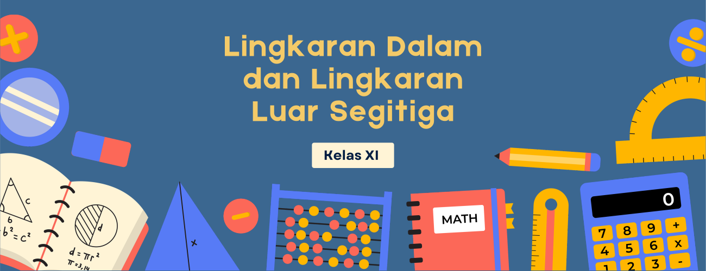
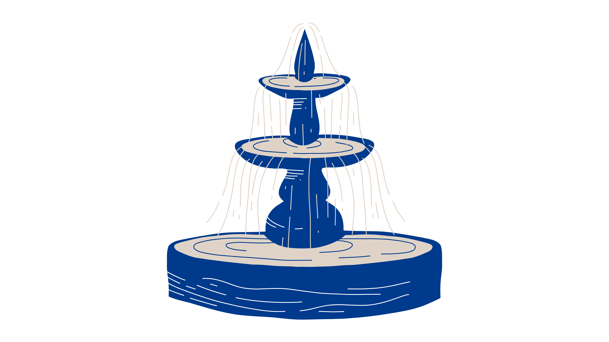
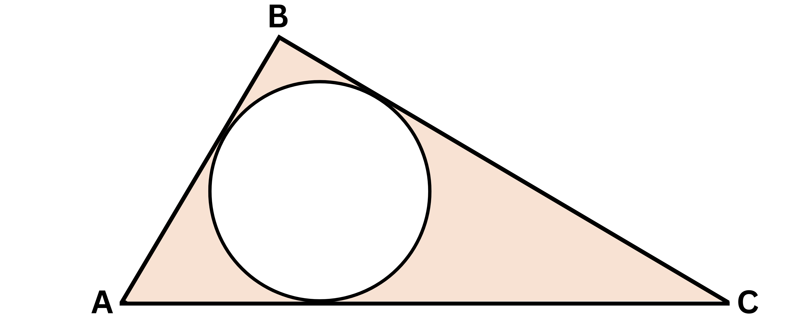
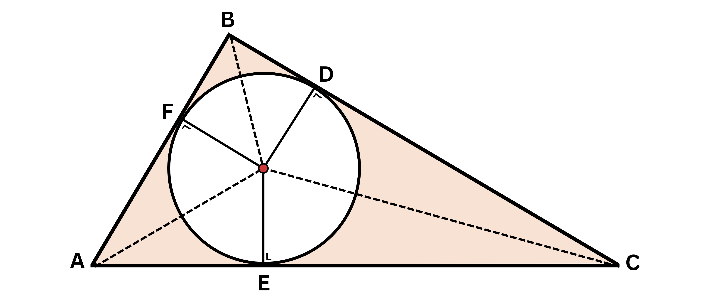
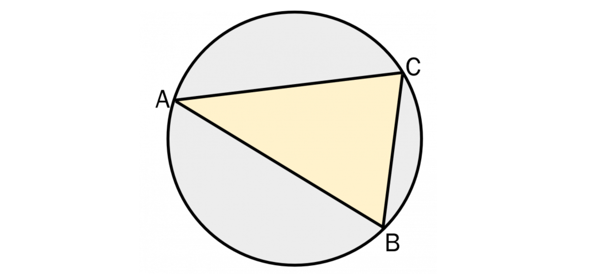
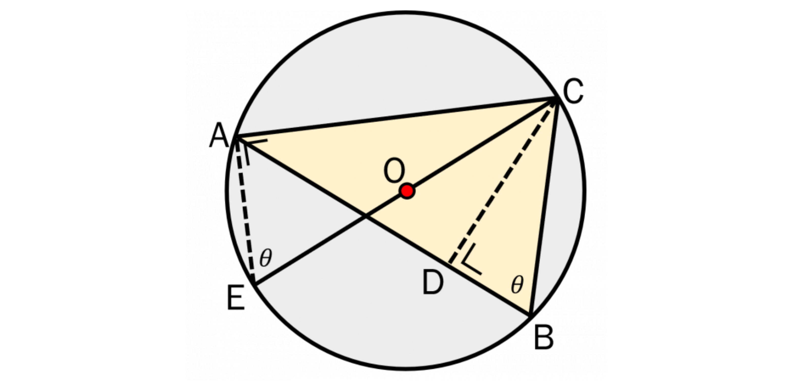
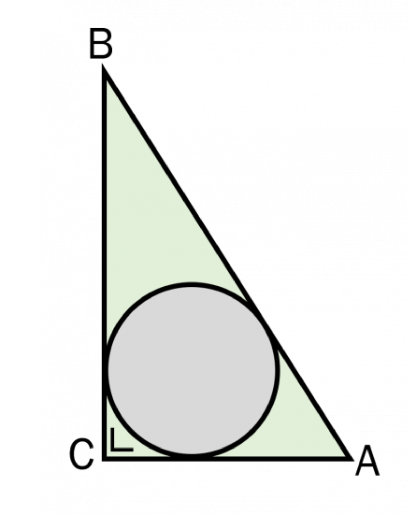
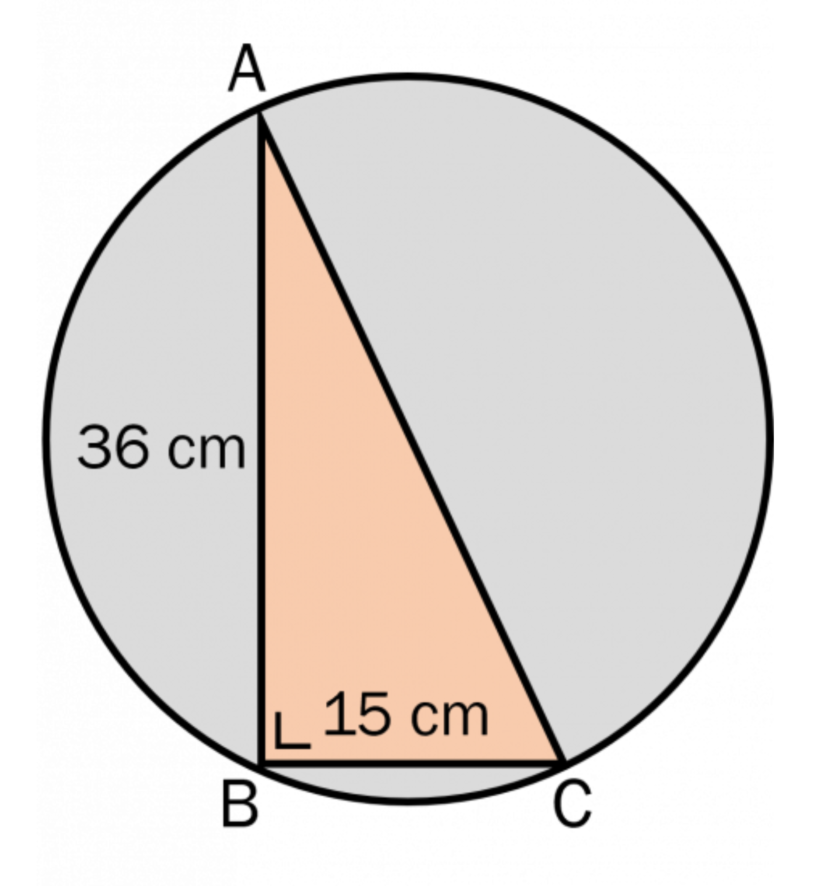

Garis Singgung Lingkaran
Membahas mengenai garis singgung persekutuan dalam dan garis singgung persekutuan luar dua lingkaran.


Tahukah kamu bahwa konsep lingkaran dalam segitiga bisa ditemukan dalam desain taman? Jika sebuah taman berbentuk segitiga ingin diberi air mancur di tengahnya, posisi terbaik untuk meletakkannya adalah di titik pusat lingkaran dalam segitiga. Titik ini merupakan titik yang berjarak sama dari ketiga sisi taman, sehingga air mancur terlihat simetris dari semua arah. Dalam matematika, titik ini disebut pusat insentri, yaitu titik potong dari sumbu-sumbu pembagi sudut segitiga. Jadi, tanpa disadari, desain ruang terbuka pun sering memanfaatkan konsep geometri untuk menciptakan keseimbangan dan keindahan.
Lingkaran dalam segitiga (incircle) didefinisikan sebagai lingkaran yang terletak di dalam segitiga dan menyinggung ketiga sisi segitiga tersebut. Gambar berikut menunjukkan △ABC dan lingkaran dalamnya.

Misalkan terdapat △ABC dan lingkaran dalam dengan pusat O dan berjari-jari r. Tarik garis dari titik O ke setiap sisi segitiga tepat di titik singgung lingkaran, yaitu titik D, E, dan F sehingga saling tegak lurus seperti gambar berikut.

Dengan menggunakan garis bantu (garis putus-putus) yang ditarik dari titik O ke titik sudut segitiga, kita peroleh tiga segitiga berbeda, yaitu △AOC, △BOC, dan △AOB. Luas total △ABC sama dengan jumlah luas ketiga segitiga tersebut.
Lingkaran luar segitiga (excircle) didefinisikan sebagai lingkaran yang terletak di luar segitiga dan menyinggung ketiga sisi atau perpanjangan sisi segitiga tersebut. Gambar berikut menunjukkan △ABC dan lingkaran luarnya.

Misalkan terdapat △ABC dan lingkaran luar dengan pusat O dan berjari-jari R. Tarik garis tinggi segitiga dari salah satu titik sudut, misalnya dari titik C. Titik tingginya kita sebut sebagai titik D. Selanjutnya, tarik garis dari C ke sisi lingkaran di seberangnya sehingga melalui titik pusat O.

Perhatikan bahwa ∠EAC siku-siku karena merupakan sudut keliling yang menghadaap diameter lingkaran.
Selain itu, ∠AEC = ∠CBD = θ karena menghadap busur yang sama, yaitu AC.
Diketahui juga bahwa CE = 2R karena merupakan diameter lingkaran.
Perhatikan △BCD dan △AEC. Kedua segitiga ini sebangun (△BCD ~ △AEC) karena ada
dua sudut yang bersesuaian sama besar. Berdasarkan kesebangunan tersebut, kita peroleh
Panjang jari-jari lingkaran dalam dapat dicari dengan membagi luas segitiga terhadap setengah kelilingnya.
Panjang jari-jari lingkaran luar segitiga dapat dicari dengan cara mengalikan panjang ketiga sisinya, lalu dibagi dengan empat kali luas segitiga.
Perhatikan gambar di bawah ini!

Jika panjang AC dan AB berturut-turut adalah 8 cm dan 15 cm, maka panjang jari-jari lingkaran dalam segitiga tersebut adalah...
Jawab:
Diketahui : AC = 8 cm dan CB = 15 cm
Ditanya : r = ...?
Penyelesaian:
Pertama kita harus mencari sisi AB untuk dapat menghitung keliling lingkarannya. Panjang sisi AB dapat dicari dengan teorema phytagoras.
Panjang jari-jari lingkaran dalam dapat dicari dengan membagi luas segitiga (L) terhadap setengah kelilingnya (s).
Jadi, panjang jari-jari lingkaran dalamnya adalah 3 cm
Sebuah segitiga siku-siku mempunyai panjang sisi berpenyiku masing-masing 15 dan 36 cm. Jika sebuah lingkaran akan dibuat, maka panjang jari-jari lingkaran terkecil yang dapat menutupi segitiga tersebut adalah...
Jawab:
Diketahui : Panjang sisi berpenyiku 15 cm dan 36 cm
r2 = 2 cm
s = 13 cm
Ditanya : d = ...?
Penyelesaian:

Pertama, kita cari dulu panjang AC dengan menggunakan rumus phytagoras.
Panjang jari-jari lingkaran luar segitiga dapat kita cari dengan cara mengalikan panjang ketiga sisinya, lalu dibagi dengan empat kali luas segitiga.
Jadi, panjang jari-jari lingkaran terkecil yang dapat menutupi segitiga tersebut adalah 19,5 cm